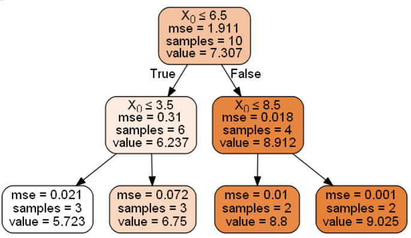

<!DOCTYPE html>


<html lang="zh-CN">
  

    <head>
      <meta charset="utf-8" />
       
      <meta name="keywords" content="c,c++,java,python,leetcode,algorithm,reading,life,moods,machine-learning,data-mining,deep-learning,AI" />
       
      <meta name="description" content="一个分享机器学习、算法与数据结构，个人学习心得、读书笔记、生活的博客。" />
      
      <meta
        name="viewport"
        content="width=device-width, initial-scale=1, maximum-scale=1"
      />
      <title>『我爱机器学习』决策树 |  细语呢喃</title>
  <meta name="generator" content="hexo-theme-ayer">
      
      <link rel="shortcut icon" href="/images/site/avatar.jpg" />
       
<link rel="stylesheet" href="/dist/main.css">

      <link
        rel="stylesheet"
        href="https://cdn.jsdelivr.net/gh/Shen-Yu/cdn/css/remixicon.min.css"
      />
      
<link rel="stylesheet" href="/css/custom.css">
 
      <script src="https://cdn.jsdelivr.net/npm/pace-js@1.0.2/pace.min.js"></script>
       

<script type="text/javascript">
(function(i,s,o,g,r,a,m){i['GoogleAnalyticsObject']=r;i[r]=i[r]||function(){
(i[r].q=i[r].q||[]).push(arguments)},i[r].l=1*new Date();a=s.createElement(o),
m=s.getElementsByTagName(o)[0];a.async=1;a.src=g;m.parentNode.insertBefore(a,m)
})(window,document,'script','//www.google-analytics.com/analytics.js','ga');

ga('create', 'fMKqXfnCsLFKKj0NjoZZApB_BuqLVUiJxtRkj-rznU4', 'auto');
ga('send', 'pageview');

</script>


 
<script>
var _hmt = _hmt || [];
(function() {
	var hm = document.createElement("script");
	hm.src = "https://hm.baidu.com/hm.js?d6a8cb42bd9ae728375b6726daa75e95";
	var s = document.getElementsByTagName("script")[0]; 
	s.parentNode.insertBefore(hm, s);
})();
</script>


      <!-- mermaid -->
      
    </head>
  </html>
</html>


<body>
  <div id="app">
    
      
    <main class="content on">
      <section class="outer">
  <article
  id="post-machine-learning-decision-tree"
  class="article article-type-post"
  itemscope
  itemprop="blogPost"
  data-scroll-reveal
>
  <div class="article-inner">
    
    <header class="article-header">
       
<h1 class="article-title sea-center" style="border-left:0" itemprop="name">
  『我爱机器学习』决策树
</h1>
 

      
    </header>
     
    <div class="article-meta">
      <a href="/machine-learning-decision-tree/" class="article-date">
  <time datetime="2018-04-19T04:29:06.000Z" itemprop="datePublished">2018-04-19</time>
</a> 
  <div class="article-category">
    <a class="article-category-link" href="/categories/study/">study</a> / <a class="article-category-link" href="/categories/study/%E6%9C%BA%E5%99%A8%E5%AD%A6%E4%B9%A0/">机器学习</a>
  </div>
  
<div class="word_count">
    <span class="post-time">
        <span class="post-meta-item-icon">
            <i class="ri-quill-pen-line"></i>
            <span class="post-meta-item-text"> 字数统计:</span>
            <span class="post-count">7k</span>
        </span>
    </span>

    <span class="post-time">
        &nbsp; | &nbsp;
        <span class="post-meta-item-icon">
            <i class="ri-book-open-line"></i>
            <span class="post-meta-item-text"> 阅读时长≈</span>
            <span class="post-count">29 分钟</span>
        </span>
    </span>
</div>
 
       
        <div class="word_count">
    <span class="post-meta-item-icon">
        <i class="ri-eye-fill"></i> 
        阅读数:<span id="/machine-learning-decision-tree/" data-flag-title="『我爱机器学习』决策树" class="leancloud_visitors">0</span>次
    </span>
</div>
      
    </div>
      
    <div class="tocbot"></div>


  
    <div class="article-entry" itemprop="articleBody">
       
  <p>本文将介绍一个简单常见的机器学习方法--决策树。包括但不限于：</p>
<ul>
<li>ID3</li>
<li>C4.5</li>
<li>CART</li>
<li>决策树剪枝</li>
</ul>
<a id="more"></a>
<h2 id="决策树简介">决策树简介</h2>
<p>什么是决策树呢？下面的图来自西瓜书，这就是一棵决策树，这个决策树用来判断一个瓜是否位好瓜。</p>
<figure>
<figcaption aria-hidden="true">decision-tree-example</figcaption>
</figure>
<p>对于一个瓜，首先看其纹理，</p>
<ul>
<li>纹理模糊，说明是坏瓜</li>
<li>纹理稍糊，还得看其触感，如果触感硬滑为好瓜，触感软粘为坏瓜</li>
<li>纹理清晰，则接下来看根蒂....</li>
</ul>
<p>可以看出，决策树是一个可解释性很强的模型，用数据结构里的树来描述的话，是一棵<strong>多叉树</strong>，其<strong>中间结点代表决策步骤，叶子结点代表决策结果（或者说类别标签）</strong>，而<strong>从根结点到叶子结点则描述了我们决策的过程</strong>。</p>
<p>不过，如何训练决策树呢？给定训练数据，可能存在多棵能拟合数据的决策树，如果要求解全局最优的决策树，那么是一个NP问题，因此，我们往往采用贪心法建立次优决策树。</p>
<p>采用贪心法建立决策树的框架如下（采用分治法（Divide and conquer）递归的建树）：</p>
<figure>
<figcaption aria-hidden="true">decision-tree-algorithm</figcaption>
</figure>
<p>上图中，有2种情形使得递归返回，</p>
<ul>
<li>情形1：即代码2-4行，当前结点的样本都属于同一类别，无需划分，递归返回</li>
<li>情形2：即代码5-7行，在当前属性集为空，或是所有样本在所有属性上取值都相同，无法进一步划分，所以返回</li>
</ul>
<p>很简单是不是！我们只需要搞定第8行就可以了，如何选择最优划分属性呢？这就是不同贪心算法采用的不同策略了。</p>
<p>PS: 周志华的西瓜书中，认为第12行应该标记完然后return；我觉得是错误的。因为还有其它取值非空的<span class="math inline">\(D_v\)</span>。因此这里我将图上的return去除了。</p>
<h2 id="id3与信息增益">ID3与信息增益</h2>
<p>一般而言，我们希望决策树的分支结点所包含的样本尽可能属于同一类别，即结点的纯度越来越高。而ID3中采用信息增益来衡量“纯度”的变化，从而选择划分点。</p>
<p>信息论与概率统计中，<strong>熵</strong>（Entropy）用来表示随机变量不确定性的大小，熵越大，不确定性越大。</p>
<p>设随机变量D有d个取值<span class="math inline">\(\{a_1,a_2,\cdots, a_d\}\)</span>, 取值取值为<span class="math inline">\(a_i\)</span>的概率为<span class="math inline">\(p_i\)</span>, 则随机变量的熵定义为： <span class="math display">\[
H(D) = -\sum_{i=1}^dp_i\log p_i\tag{2-1}
\]</span> 计算时约定当p = 0时，<span class="math inline">\(p_i\log p_i = 0\)</span> 。因为熵只依赖于X的分布，所以可以将<span class="math inline">\(H(D)\)</span>写为<span class="math inline">\(H(p)\)</span></p>
<p>应用在分类数据集中，<span class="math inline">\(p_i\)</span>可以表示第i个类别占总样本的比重。</p>
<p>接着介绍<strong>条件熵</strong>（conditional entropy），即给定随机变量a后，D剩余的不确定性（熵）: <span class="math display">\[
H(D|A)= \sum_{i=1}^dp(A=a_i)H(D|A=a_i)\tag{2-2}
\]</span> 看不懂条件熵的式子？其实就是按特征A的取值划分数据，对取值为<span class="math inline">\(a_i\)</span>的数据计算熵，然后乘以取值为<span class="math inline">\(a_i\)</span>的概率。</p>
<p><strong>信息增益</strong>(information gain)描述的是，给定随机变量A后，X所减少的不确定性(即熵 - 条件熵)： <span class="math display">\[
IG(D|A) = H(D) - H(D | A) \tag{2-3}
\]</span> 一般而言，信息增益越大，说明选择属性A来进行划分所获得的“纯度"提升越大。因此，著名的ID3决策树学习算法就是用信息增益来划分属性的。</p>
<h4 id="例子">例子</h4>
<p>以周志华的西瓜书中西瓜数据2.0为例：</p>
<figure>
<figcaption aria-hidden="true">decision-tree-data-watermelon-2.0</figcaption>
</figure>
<p>该数据共有17条，我们可以用这个数据来学习一棵判断一个瓜是否为好瓜的决策树。</p>
<p>首先看好瓜出现了8次，坏瓜出现了9次，因此可以用式2-1计算出根结点的熵为： <span class="math display">\[
H(D)  =-\sum_{i=1}^2p_i\log p_i= - (\frac{8}{17}\log_2\frac{8}{17}+\frac{9}{17}\log_2\frac{9}{17}) = 0.998
\]</span> 接着，查看可选取的特征有：{色泽、根蒂、敲声、纹理、脐部、触感}</p>
<p>先查看色泽特征，有三种取值，{青绿， 乌黑，浅白}，</p>
<ul>
<li>色泽为青绿的时候，有{1, 4, 6, 10, 13, 17} 6个样例，其中好瓜为{1,4,6}</li>
<li>色泽为乌黑时有{2, 3, 7, 8, 9, 15} 6个样例，其中好瓜为{2,3,7,8}</li>
<li>色泽为浅白时有{5, 11, 12, 14, 16} 5个样例，其中好瓜为{5}</li>
</ul>
<p>因此我们用式子2-2计算条件熵： <span class="math display">\[
\begin{align*}
H(D | 色泽) &amp;= \sum_{i=1}^3p(A=a_i)H(D|A=a_i) \\
&amp;=p(A=青绿)H(D|A=青绿) +p(A=乌黑)H(D|A=乌黑)+p(A=浅白)H(D|A=浅白)  \\
&amp;=\frac{6}{17}\left( -  (\frac{3}{6}\log_2\frac{3}{6} + \frac{3}{6}\log_2\frac{3}{6})  \right) +
       \frac{6}{17}\left( -  (\frac{4}{6}\log_2\frac{4}{6} + \frac{2}{6}\log_2\frac{2}{6})  \right) +
       \frac{5}{17}\left( -  (\frac{1}{5}\log_2\frac{1}{5} + \frac{4}{5}\log_2\frac{4}{5})  \right)\\
 &amp;=\frac{6}{17}*1.000 + \frac{6}{17}*0.918 +  \frac{5}{17}*0.722\\
 &amp;= 0.8893
\end{align*}
\]</span> 最后用2-3计算给定了色泽特征的信息增益： <span class="math display">\[
IG(D|色泽) = H(D) - H(D | 色泽) = 0.998-0.8893=0.109
\]</span> 同理计算出其它特征的信息增益， <span class="math display">\[
\begin{align*}
&amp;IG(D|根蒂)  = 0.143；IG(D|敲声) =0.141\\
&amp;IG(D|纹理)  = 0.381；IG(D|脐部) =0.289\\
&amp;IG(D|触感)  = 0.006；
\end{align*}
\]</span> 因为纹理的信息增益最大，所以会选纹理作为这次的划分特征。</p>
<p>根据前面讲的决策树算法框架，会将数据集根据纹理的取值划分，</p>
<ul>
<li>纹理清晰：{1, 2, 3, 4, 5, 6, 8, 10, 15}</li>
<li>纹理稍糊: {7, 9, 13, 14, 17}</li>
<li>纹理模糊: {11, 12, 16}</li>
</ul>
<p>然后，建立递归的建立三棵子树，不过子树中就没有纹理特征了。</p>
<p>以纹理清晰的子树为例，有9个样例(设为<span class="math inline">\(D^1\)</span>用来和原始数据进行区分)， <span class="math display">\[
H(D^1)  =-\sum_{i=1}^2p_i\log p_i= - (\frac{7}{9}\log_2\frac{7}{9}+\frac{2}{9}\log_2\frac{2}{9}) =0.7642
\]</span> 可以用{色泽、根蒂、敲声、脐部、触感}这五个特征计算信息增益，来选择信息增益最大的特征，从而进一步划分。</p>
<p>这里继续以色泽特征的信息增益计算为例：{1, 2, 3, 4, 5, 6, 8, 10, 15} 有三种取值，{青绿， 乌黑，浅白}，</p>
<ul>
<li>色泽为青绿的时候，有{1, 4, 6, 10} 4个样例，其中好瓜为{1, 4, 6}</li>
<li>色泽为乌黑时有{2, 3, 8, 15} 4个样例，其中好瓜为{2, 3, 8}</li>
<li>色泽为浅白时有{5} 1个样例，其中好瓜为{5}</li>
</ul>
<p><span class="math display">\[
\begin{align*}
H(D^1 | 色泽) &amp;= \sum_{i=1}^3p(A=a_i)H(D^1|A=a_i) \\
&amp;=p(A=青绿)H(D^1|A=青绿) +p(A=乌黑)H(D^1|A=乌黑)+p(A=浅白)H(D^1|A=浅白)  \\
&amp;=\frac{4}{9}\left( -  (\frac{3}{4}\log_2\frac{3}{4} + \frac{1}{4}\log_2\frac{1}{4})  \right) +
      \frac{4}{9}\left( -  (\frac{3}{4}\log_2\frac{3}{4} + \frac{1}{4}\log_2\frac{1}{4})  \right) +
       \frac{1}{9}\left( -  (\frac{1}{1}\log_2\frac{1}{1} + \frac{0}{1}\log_2\frac{0}{1})  \right)\\
 &amp;=\frac{4}{9}*0.8113 + \frac{4}{9}*0.8113 +  \frac{1}{9}*0\\
 &amp;= 0.7215
\end{align*}
\]</span></p>
<p>因此信息增益为: <span class="math display">\[
IG(D^1|色泽) = H(D^1) - H(D^1 | 色泽) = 0.7642-0.7215=0.043
\]</span> 类似可以算出其它的信息增益，然后选最大进行划分。</p>
<p>最终的决策树即为本文一开始给出的图，这里再贴出来方便读者查看：</p>
<figure>
<figcaption aria-hidden="true">decision-tree-example</figcaption>
</figure>
<h2 id="c4.5">C4.5</h2>
<p>ID3有一些不足的地方：</p>
<ul>
<li>选择分裂变量时会倾向于选择类别较多的变量</li>
<li>只能处理类别变量，不能处理连续性变量（实数的）</li>
<li>不能处理缺失值</li>
</ul>
<p>下面来看看C4.5是如何改进的。</p>
<h3 id="增益率">增益率</h3>
<p>信息增益<strong>对可取值数目较多</strong>的特征有所偏好（你可以想象极端情况，只有一个取值的时候，信息增益为0），为减少这种偏好的影响，C4.5决策树算法采用<strong>增益率</strong>： <span class="math display">\[
{\rm Gain\_ratio}(D|A) = \frac{IG(D|A)}{H(A)} \tag{3-1}
\]</span></p>
<p>2-4只有分母是仿佛我们没见过的？其实就是特征A的熵，之前我们计算H(D)是按D的类别（好瓜、坏瓜），而H(A)则按A的取值来计算。</p>
<p>如以上面的样例数据，再次以色泽为例， <span class="math display">\[
H(色泽) = -\sum_{i=1}^3p_i\log_2p_i = -(\frac{6}{17}\log_2\frac{6}{17} + \frac{6}{17}\log_2\frac{6}{17}+\frac{5}{17}\log_2\frac{5}{17}) = 1.580
\]</span> 注意的是，<strong>增益率对可取值数目较少的特征有所偏好</strong>，因此C4.5<strong>并不是直接选取增益率最大的特征作为划分</strong>，而是<strong>先从候选特征中找出信息增益高于平均水平的特征，然后再从中选出增益率最高的</strong>。</p>
<h3 id="连续变量处理">连续变量处理</h3>
<p>C4.5中，处理连续变量的方法是对连续变量离散化。</p>
<p>如我们有一个连续的特征A，共有n个不同的取值，将这些取值从小到大进行排序，得到： <span class="math inline">\(\{a_1,a_2,...,a_n\}\)</span></p>
<p>这样，可以在相邻的取值<span class="math inline">\(a^i\)</span>和<span class="math inline">\(a^{i+1}\)</span>中间点t处进行切分，将数据划分为两部分，一部分小于等于t，另一部分大于t。</p>
<p>可能的划分点有n-1种：<span class="math inline">\(t \in \{\frac{a_1 + a_2}{2},\frac{a_2 + a_3}{2},\cdots,\frac{a_{n-1} + a_n}{2} \}\)</span></p>
<p>这样，在n - 1个取值中选择最优划分点即可。</p>
<h3 id="缺失值处理">缺失值处理</h3>
<p>在真实数据中，往往会遇到不完整的样本，即样本中某些特征式缺失的。那么要如何处理呢？</p>
<p>要处理缺失值，需要解决两个问题：</p>
<ol type="1">
<li>如何在属性值缺失的情况下进行划分属性选择？</li>
<li>给定划分属性，若样本在该属性上的值缺失，如何对样本进行划分？</li>
</ol>
<p>给定训练数据集D和属性a，令<span class="math inline">\(\tilde{D}\)</span>表示D中在属性a上没有缺失值的样本子集。对于问题1，我们尽可根据<span class="math inline">\(\tilde{D}\)</span>来判断属性a的优劣，假定a有V个可取值<span class="math inline">\(\{a^1,a^2,\cdots,a^V\}\)</span>，令<span class="math inline">\(\tilde{D}^v\)</span>表示<span class="math inline">\(\tilde{D}\)</span>中在属性a上取值为<span class="math inline">\(a^v\)</span>的样本，<span class="math inline">\(\tilde{D}_k\)</span>表示<span class="math inline">\(\tilde{D}\)</span>中属于第k类的样本子集，则显然有<span class="math inline">\(\tilde{D} = \bigcup_{k=1}^K\tilde{D}_k = \bigcup_{v=1}^V\tilde{D}^v\)</span></p>
<p>假定我们为每个样本x赋予一个权重<span class="math inline">\(w_x\)</span>，并定义 <span class="math display">\[
\rho = \frac{\sum_{x \in \tilde{D}}w_x}{\sum_{x \in D}w_x}\\
\tilde{p}_k = \frac{\sum_{x \in \tilde{D}_k}w_x}{\sum_{x \in  \tilde{D}}w_x}\\
\tilde{r}_v = \frac{\sum_{x \in \tilde{D}^v}w_x}{\sum_{x \in  \tilde{D}}w_x}
\]</span> 直观上看，对属性a，</p>
<ul>
<li><span class="math inline">\(\rho\)</span> 表示无缺失值样本所占的比例</li>
<li><span class="math inline">\(\tilde{p}_k\)</span>表示无缺失样本中第k类的比例</li>
<li><span class="math inline">\(\tilde{r}_v\)</span>表示无缺失样本在属性a上取值<span class="math inline">\(a^v\)</span>的样本所占的比例</li>
</ul>
<p>显然<span class="math inline">\(\sum_{k=1}^K\tilde{p}_k=1; \  \sum_{v=1}^V\tilde{r}_v =1\)</span></p>
<p>基于上述定义，可以将信息增益2-3推广为 <span class="math display">\[
Gain(D, a) =\rho \times Gain(\tilde{D}, a) = \rho\times\left( H(\tilde{D}) - \sum_{v=1}^V\tilde{r}_vH(\tilde{D}^v))  \right)\\
H(\tilde{D^v})= -\sum_{k=1}^K \tilde{p}_k \log_2 \tilde{p}_k
\]</span> 其实上式和原来的差不多，只是计算熵和条件熵的时候，采用的是没有缺失的样本子集<span class="math inline">\(\tilde{D}\)</span>，并且是加权的结果，然后最后信息增益乘以<span class="math inline">\(\tilde{D}\)</span>占<span class="math inline">\(D\)</span>的加权比重</p>
<p>对于问题2</p>
<ul>
<li>若样本x在划分属性a上的取值已知，则将x划入与其取值对应的子结点。</li>
<li>取值未知，则<strong>将x同时划入所有的子结点</strong>，且样本权值在属性值<span class="math inline">\(a^v\)</span>对应的子结点调整为<span class="math inline">\(\tilde{r}_v \cdot w_x\)</span>，即让同一个样本以不同的概率划入不同的子结点中</li>
</ul>
<h4 id="例子-1">例子</h4>
<p>下面的例子以西瓜数据2.0<span class="math inline">\(\alpha\)</span>为例：</p>
<figure>
<figcaption aria-hidden="true">decision-tree-data-missing-value</figcaption>
</figure>
<p>学习开始时，根节点包含全部17个样本，各个样例的权值为1。以特征色泽为例，无缺失的有14个样本，其中，包含正例6个，负例8个。因此： <span class="math display">\[
\begin{align*}
H(\tilde{D^v}) &amp;= -\sum_{k=2}^K \tilde{p}_k \log_2 \tilde{p}_k 
\\&amp;= -(\frac{6}{14}\log_2\frac{6}{14}+\frac{8}{14}\log_2\frac{8}{14}) = 0.985
\end{align*}
\]</span> <span class="math inline">\(\tilde{D}^1,\tilde{D}^2,\tilde{D}^3\)</span>分别表示特征色泽上取值为“青绿","乌黑”，以及“浅白”的样本子集，有： <span class="math display">\[
\begin{align*}
H(\tilde{D^1}) &amp;= -(\frac{2}{4}\log_2\frac{2}{4}+\frac{2}{4}\log_2\frac{2}{4}) = 1.000\\
H(\tilde{D^2}) &amp;= -(\frac{4}{6}\log_2\frac{4}{6}+\frac{2}{6}\log_2\frac{2}{6}) = 0.918\\
H(\tilde{D^3}) &amp;= -(\frac{0}{4}\log_2\frac{0}{4}+\frac{4}{4}\log_2\frac{4}{4}) = 0.000
\end{align*}
\]</span> 因此，样本子集<span class="math inline">\(\tilde{D}\)</span>上属性“色泽”的信息增益为 : <span class="math display">\[
\begin{align*}
Gain(D, a)&amp; = \rho\times\left( H(\tilde{D}) - \sum_{v=1}^V\tilde{r}_vH(\tilde{D}^v))  \right)\\
&amp;= \frac{14}{17} *\left(0.985 - (\frac{4}{14} * 1+\frac{6}{14}  * 0.918+ \frac{4}{14}* 0) \right)\\
&amp;= \frac{14}{17}  * 0.306 \\
&amp; = 0.252
\end{align*}
\]</span> 其它类别依次类推。最后发现纹理取得最大信息增益。</p>
<ul>
<li>{1, 2, 3, 4, 5, 6, 15}进入纹理= 清晰分支</li>
<li>{7, 9, 13, 14, 17} 进入纹理= 稍糊分支</li>
<li>{11, 12, 16}进入纹理=模糊分支</li>
<li>对于编号8的样本，它缺失，因此同时进入三个分支中，但权重分别调整为<span class="math inline">\(\frac{7}{15},\frac{5}{15},\frac{3}{15}\)</span>，编号10同理。</li>
</ul>
<h2 id="cart算法">CART算法</h2>
<p>CART算法想必你也有所耳闻，其全称为classification and regression tree，即分类与回归树。从这个名字就可以发现它很强大，因为它<strong>可分类可回归</strong>！</p>
<p>CART基本上和之前的决策树算法框架相同，不过CART假设决策树为<strong>二叉树</strong>，左边分支为取值“是", 右边分支取值为”否“。此外，其划分的策略也不是信息增益或信息增益率。</p>
<h3 id="分类树生成">分类树生成</h3>
<p>对于分类问题，采用<strong>基尼指数</strong>（Gini index）来判断分界点。假设有K个类，属于第k个类的概率为<span class="math inline">\(p_k\)</span>，则基尼指数为： <span class="math display">\[
{\rm Gini(D)}= \sum_{k=1}^Kp_k(1-p_k) = 1 -\sum_{k=1}^Kp_k^2\tag{4-1}
\]</span> 基尼指数反应了从数据集中抽取两个样本，其类别不一致的概率。因此<strong>Gini(D)越小，则数据集的纯度越高</strong>。也可以说，Gini(D)越大表示了集合D的不确定性越大。因此，划分的时候我们采用的是<strong>基尼指数最小的属性作为划分属性</strong>。</p>
<p>若在特征A的条件下，样本D根据特征A的某一可能取值a被分割为<span class="math inline">\(D_1=\{(x,y) \in D|A(x) = a\},\ D_2=D-D_1\)</span>，集合D的基尼指数定义为: <span class="math display">\[
{\rm Gini(D, A)} = \frac{|D_1|}{|D|}{\rm Gini(D_1)} + \frac{|D_2|}{|D|}{\rm Gini(D_2)}\tag{4-2}
\]</span></p>
<p>4-2是不是和条件熵2-2也很类似? 关于基尼指数和熵的关系可以看下图（图来自李航老师）：</p>
<figure>
<figcaption aria-hidden="true">gini-entropy-classification-error</figcaption>
</figure>
<p>可以看出二者非常接近，此外，我们可以在<span class="math inline">\(p_i=1\)</span>对<span class="math inline">\(-\log p_i\)</span>进行泰勒展开： <span class="math display">\[
\begin{align*}
f(p_i) &amp;= -\log p_i\\
f(p_i&#39;) &amp;= f(p_i) +  f&#39;(p_i)(p_i-1) = f(1) +f&#39;(1) (p_i-1) = 1-p_i
\end{align*}
\]</span> 带入信息熵得： <span class="math display">\[
\sum_{i} p_i\log p_i \approx \sum_i p_i(1-p_i)
\]</span> 即基尼系数！虽说他们数值上接近，但是<strong>gini的计算相比熵要简单的多，所以会更加的高效</strong>。</p>
<p>对于分类树和ID3的算法基本上相同，不过CART是二叉树，因此不像之前按特征划分，而是<strong>按特征取值划分</strong>。</p>
<ol type="1">
<li>对于给定的结点数据集为D，对于每一个特征A，对其所有可能的取值a，根据样本点对A=a的测试为“是”或“否"将D分割成<span class="math inline">\(D_1,D_2\)</span>两部分，利用4-2计算A=a的基尼系数，从中选取基尼系数最小的特征以及对应的切分点作为最优特征与最优切分点，从现结点生成两个子结点，将训练数据集分配到两个子结点中去。</li>
<li>类似之前的算法递归调用步骤1直到满足停止条件即可。</li>
</ol>
<p>可以看出，CART由于每次都是二分裂（划分成两部分），不像ID3是多分裂的，因此也没有ID3的倾向于取值较多的变量的缺陷。</p>
<h3 id="回归树生成">回归树生成</h3>
<p>回归树采用<strong>平方误差最小化</strong>为准则。</p>
<p>如何做呢？选择第j个特征<span class="math inline">\(x^{(j)}\)</span>和它的取值s，作为切分变量和切分点，并定义两个区域： <span class="math display">\[
R_1(j,s) = \{x|x^{(j)} \le s\} \\
R_2(j,s) = \{x|x^{(j)} \gt s\}
\]</span> PS： 这里真实中一般不直接用取值s来作为切分点，而先把特征的取值排序<span class="math inline">\(\{v_1,v_2,\cdots,v_n\}\)</span>，然后可能的阈值有：<span class="math inline">\(\{\frac{v_1 + v_2}{2},\frac{v_2 + v_3}{2},\cdots,\frac{v_{n-1} + v_n}{2} \}\)</span>。这里和C4.5中处理连续变量的方法一样。</p>
<p>然后采用平方误差损失求解最优的切分特征j 和切分点s: <span class="math display">\[
\min_{j, s} \left[ \min_{c_1} \sum_{x_i \in R_1(j, s)} (y_i -c_1)^2 +  \min_{c_2} \sum_{x_i \in R_2(j, s)} (y_i -c_2)^2  \right ] \tag{4-3}
\]</span> 其中<span class="math inline">\(c_1,c_2\)</span>为对应的R1,R2部分的均值。 <span class="math display">\[
\hat c_m = {1\over N_m}\sum_{x_i\in R_m(j,s)}y_i , \quad x\in R_m , m=1,2
\]</span> <strong>根据划分的区域递归的继续进行划分</strong>，最后就得到了回归树。</p>
<h4 id="回归树例子">回归树例子</h4>
<p>假设数据的特征就一个（就不用比较各个特征了），数据如下：</p>
<table>
<thead>
<tr class="header">
<th>x</th>
<th>1</th>
<th>2</th>
<th>3</th>
<th>4</th>
<th>5</th>
<th>6</th>
<th>7</th>
<th>8</th>
<th>9</th>
<th>10</th>
</tr>
</thead>
<tbody>
<tr class="odd">
<td>y</td>
<td>5.56</td>
<td>5.70</td>
<td>5.91</td>
<td>6.40</td>
<td>6.80</td>
<td>7.05</td>
<td>8.90</td>
<td>8.70</td>
<td>9.00</td>
<td>9.05</td>
</tr>
</tbody>
</table>
<p>可以考虑划分点{1.5,2.5,3.5,4.5,5.5,6.5,7.5,8.5,9.5}，以s = 1.5为例，此时对应的c1= 5.56, c2=7.50</p>
<p>这里开挂用python代码计算剩下的：</p>
<figure class="highlight python"><table><tr><td class="gutter"><pre><span class="line">1</span><br><span class="line">2</span><br><span class="line">3</span><br><span class="line">4</span><br><span class="line">5</span><br><span class="line">6</span><br><span class="line">7</span><br><span class="line">8</span><br><span class="line">9</span><br><span class="line">10</span><br><span class="line">11</span><br><span class="line">12</span><br><span class="line">13</span><br><span class="line">14</span><br><span class="line">15</span><br><span class="line">16</span><br><span class="line">17</span><br><span class="line">18</span><br><span class="line">19</span><br><span class="line">20</span><br><span class="line">21</span><br><span class="line">22</span><br><span class="line">23</span><br><span class="line">24</span><br><span class="line">25</span><br><span class="line">26</span><br></pre></td><td class="code"><pre><span class="line"><span class="keyword">import</span> numpy <span class="keyword">as</span> np</span><br><span class="line"></span><br><span class="line">data = np.array([<span class="number">5.56</span>, <span class="number">5.70</span>, <span class="number">5.91</span>, <span class="number">6.40</span>, <span class="number">6.80</span>, <span class="number">7.05</span>, <span class="number">8.90</span>, <span class="number">8.70</span>, <span class="number">9.00</span>, <span class="number">9.05</span>])</span><br><span class="line"><span class="keyword">for</span> k <span class="keyword">in</span> range(len(data) - <span class="number">1</span>):</span><br><span class="line">    left = data[:k + <span class="number">1</span>]</span><br><span class="line">    right = data[k + <span class="number">1</span>:]</span><br><span class="line"></span><br><span class="line">    left_mean = left.mean()</span><br><span class="line">    right_mean = right.mean()</span><br><span class="line"></span><br><span class="line">    left_error = np.sum([(left_mean - x) ** <span class="number">2</span> <span class="keyword">for</span> x <span class="keyword">in</span> left])</span><br><span class="line">    right_error = np.sum([(right_mean - x) ** <span class="number">2</span> <span class="keyword">for</span> x <span class="keyword">in</span> right])</span><br><span class="line">    mean_error = (left_error + right_error)</span><br><span class="line">    print(k + <span class="number">1.5</span>, left, right, <span class="string">&#x27;mean_error=&#123;0:5.2f&#125; c1=&#123;1:5.2f&#125; c2=&#123;2:5.2f&#125;&#x27;</span>.format(mean_error, left_mean, right_mean))</span><br><span class="line"></span><br><span class="line"><span class="string">&quot;&quot;&quot;</span></span><br><span class="line"><span class="string">1.5 [ 5.56] [ 5.7   5.91  6.4   6.8   7.05  8.9   8.7   9.    9.05] mean_error=15.72 c1= 5.56 c2= 7.50</span></span><br><span class="line"><span class="string">2.5 [ 5.56  5.7 ] [ 5.91  6.4   6.8   7.05  8.9   8.7   9.    9.05] mean_error=12.08 c1= 5.63 c2= 7.73</span></span><br><span class="line"><span class="string">3.5 [ 5.56  5.7   5.91] [ 6.4   6.8   7.05  8.9   8.7   9.    9.05] mean_error= 8.37 c1= 5.72 c2= 7.99</span></span><br><span class="line"><span class="string">4.5 [ 5.56  5.7   5.91  6.4 ] [ 6.8   7.05  8.9   8.7   9.    9.05] mean_error= 5.78 c1= 5.89 c2= 8.25</span></span><br><span class="line"><span class="string">5.5 [ 5.56  5.7   5.91  6.4   6.8 ] [ 7.05  8.9   8.7   9.    9.05] mean_error= 3.91 c1= 6.07 c2= 8.54</span></span><br><span class="line"><span class="string">6.5 [ 5.56  5.7   5.91  6.4   6.8   7.05] [ 8.9   8.7   9.    9.05] mean_error= 1.93 c1= 6.24 c2= 8.91</span></span><br><span class="line"><span class="string">7.5 [ 5.56  5.7   5.91  6.4   6.8   7.05  8.9 ] [ 8.7   9.    9.05] mean_error= 8.01 c1= 6.62 c2= 8.92</span></span><br><span class="line"><span class="string">8.5 [ 5.56  5.7   5.91  6.4   6.8   7.05  8.9   8.7 ] [ 9.    9.05] mean_error=11.74 c1= 6.88 c2= 9.03</span></span><br><span class="line"><span class="string">9.5 [ 5.56  5.7   5.91  6.4   6.8   7.05  8.9   8.7   9.  ] [ 9.05] mean_error=15.74 c1= 7.11 c2= 9.05</span></span><br><span class="line"><span class="string">&quot;&quot;&quot;</span></span><br></pre></td></tr></table></figure>
<p>可以看出，选6.5的时候最小，因此选6.5作为划分点。因此得到回归树<span class="math inline">\(T_1\)</span>为： <span class="math display">\[
T_1(x) =
\begin{cases}
6.24, &amp; x\le 6.5 \\
8.91, &amp; x \gt 6.5 \\
\end{cases}
\]</span> 接下来对<span class="math inline">\(R_1\)</span>和<span class="math inline">\(R_2\)</span>区域做同样的操作直到达到终止条件即可。</p>
<p>假如树的深度多允许为2，则最后的回归树为</p>
<figure>
<figcaption aria-hidden="true">decision-tree-partition-space-example</figcaption>
</figure>
<p>PS: 使用下面的代码生成 <figure class="highlight python"><table><tr><td class="gutter"><pre><span class="line">1</span><br><span class="line">2</span><br><span class="line">3</span><br><span class="line">4</span><br><span class="line">5</span><br><span class="line">6</span><br><span class="line">7</span><br><span class="line">8</span><br><span class="line">9</span><br><span class="line">10</span><br><span class="line">11</span><br><span class="line">12</span><br><span class="line">13</span><br><span class="line">14</span><br><span class="line">15</span><br><span class="line">16</span><br><span class="line">17</span><br><span class="line">18</span><br><span class="line">19</span><br><span class="line">20</span><br></pre></td><td class="code"><pre><span class="line"><span class="keyword">import</span> numpy <span class="keyword">as</span> np</span><br><span class="line"><span class="keyword">from</span> sklearn.tree <span class="keyword">import</span> DecisionTreeRegressor</span><br><span class="line"></span><br><span class="line">X = np.arange(<span class="number">1</span>, <span class="number">11</span>).reshape(<span class="number">-1</span>, <span class="number">1</span>)</span><br><span class="line">y = np.array([<span class="number">5.56</span>, <span class="number">5.70</span>, <span class="number">5.91</span>, <span class="number">6.40</span>, <span class="number">6.80</span>, <span class="number">7.05</span>, <span class="number">8.90</span>, <span class="number">8.70</span>, <span class="number">9.00</span>, <span class="number">9.05</span>])</span><br><span class="line"></span><br><span class="line">tree = DecisionTreeRegressor(max_depth=<span class="number">2</span>).fit(X, y)</span><br><span class="line"><span class="comment"># import os     </span></span><br><span class="line"><span class="comment"># os.environ[&quot;PATH&quot;] += os.pathsep + &#x27;C:/Program Files (x86)/Graphviz2.38/bin/&#x27;</span></span><br><span class="line"><span class="keyword">from</span> sklearn.externals.six <span class="keyword">import</span> StringIO  </span><br><span class="line"><span class="keyword">from</span> IPython.display <span class="keyword">import</span> Image  </span><br><span class="line"><span class="keyword">from</span> sklearn.tree <span class="keyword">import</span> export_graphviz</span><br><span class="line"><span class="keyword">import</span> pydotplus</span><br><span class="line"></span><br><span class="line">dot_data = export_graphviz(tree, out_file=<span class="literal">None</span>,  </span><br><span class="line">                filled=<span class="literal">True</span>, rounded=<span class="literal">True</span>,</span><br><span class="line">                special_characters=<span class="literal">True</span>)</span><br><span class="line"></span><br><span class="line">graph = pydotplus.graph_from_dot_data(dot_data)  </span><br><span class="line">Image(graph.create_png())</span><br></pre></td></tr></table></figure></p>
<h4 id="回归树的空间划分">回归树的空间划分</h4>
<p>在上面的例子中，可以画出对应的回归为：</p>
<figure>
<figcaption aria-hidden="true">decision-tree-partition-space</figcaption>
</figure>
<p>对应的python代码为</p>
<figure class="highlight python"><table><tr><td class="gutter"><pre><span class="line">1</span><br><span class="line">2</span><br><span class="line">3</span><br><span class="line">4</span><br><span class="line">5</span><br><span class="line">6</span><br><span class="line">7</span><br><span class="line">8</span><br><span class="line">9</span><br></pre></td><td class="code"><pre><span class="line"><span class="keyword">import</span> matplotlib.pyplot <span class="keyword">as</span> plt</span><br><span class="line">plt.figure()</span><br><span class="line">plt.scatter(X, y, s=<span class="number">20</span>, edgecolor=<span class="string">&quot;black&quot;</span>, c=<span class="string">&quot;darkorange&quot;</span>, label=<span class="string">&quot;data&quot;</span>)</span><br><span class="line">plt.plot(X, tree.predict(X), color=<span class="string">&quot;cornflowerblue&quot;</span>, label=<span class="string">&quot;regression tree&quot;</span>, linewidth=<span class="number">2</span>)</span><br><span class="line">plt.xlabel(<span class="string">&quot;X&quot;</span>)</span><br><span class="line">plt.ylabel(<span class="string">&quot;Y&quot;</span>)</span><br><span class="line">plt.title(<span class="string">&quot;Decision Tree Regression&quot;</span>)</span><br><span class="line">plt.legend()</span><br><span class="line">plt.show()</span><br></pre></td></tr></table></figure>
<p>可以看出，<strong>一个回归树对应着输入空间（特征空间）的一个划分以及在划分的单元上的输出值</strong>。上图就是对输入空间X的划分。假设已经将输入空间划分为K个单元<span class="math inline">\(R_1, R_2, \ldots, R_K\)</span>, 在每个单元<span class="math inline">\(R_k\)</span>上有个固定的输出<span class="math inline">\(c_k\)</span>,则回归树可以表示为: <span class="math display">\[
f(\mathbf{X}) = \sum_{k=1}^K c_k I(\mathbf{X} \in R_k) \tag{4-4}
\]</span> 式4-4就是回归树比较数学的表示方法。比如上面的例子，<span class="math inline">\(x\in (3.5,6.5]\)</span>时值就是6.75。可以看出各个划分空间是<strong>不相交</strong>的。</p>
<p>当输入空间的划分确定时，可以用平方误差<span class="math inline">\(\sum_{x_i \in R_k}(y_i - f(x_i))^2\)</span>来表示回归树对于训练数据的预测误差，显然，单元<span class="math inline">\(R_k\)</span>上的<span class="math inline">\(c_k\)</span>的k最优值是<span class="math inline">\(R_k\)</span>上所有输入实例<span class="math inline">\(x_i\)</span>对应的<span class="math inline">\(y_i\)</span>的均值。</p>
<h2 id="决策树剪枝">决策树剪枝</h2>
<p>决策树的生成算法递归的产生决策树，直到满足终止条件位置。产生的决策树可能过于复杂，对训练数据分类准确，但是对未知样本可能准确性不高。换句话说，<strong>决策树算法容易过拟合</strong>。为了防止过拟合，可以通过剪枝算法来降低复杂度，减少过拟合的风险。</p>
<p>决策树剪枝算法的基本策略有”预剪枝“和”后剪枝“两种策略。基本思路是极小化损失函数。</p>
<ul>
<li>预剪枝即在决策树<strong>生成过程中</strong>，对每个结点在划分前先进行估计，若当前结点的划分不能带来决策树泛化性能的提升，则停止划分当前结点，并标记为叶结点。</li>
<li>后剪枝是先从训练集生成一棵<strong>完整的决策树</strong>，然后自底向上地对非叶结点进行考察，若将该节点对应的子树替换为叶子结点能带来决策树的泛化性能提升，则将该子树替换为叶子结点。</li>
</ul>
<p>上面的泛化性能考察，就要求我们对数据集划分，比如划分一部分为训练集，另一部分为验证集。然后考察在验证集上的准确率。</p>
<p>因此，我们划分出新的数据如下表，双线上部分为训练集，双线下部分为验证集</p>
<figure>
<figcaption aria-hidden="true">decision-tree-data-watermelon-2.0-train-and-validation-data</figcaption>
</figure>
<p>如果不经过剪枝，训练出来的决策树如下：</p>
<figure>
<figcaption aria-hidden="true">decision-tree-example-no-pruning</figcaption>
</figure>
<p>假设采用信息增益作为划分依据，现在来看看预剪枝和后剪枝怎么做的。</p>
<h3 id="预剪枝">预剪枝</h3>
<p>在不剪枝的做法中，我们根据信息增益准则，选取信息增益最大的脐部特征来进行划分，并产生3个分支。</p>
<p>而在预剪枝的过程中，我们需要看用脐部进行划分是否能提升泛化性能。</p>
<ul>
<li>若不划分，根结点被标记为叶子结点，类别为最多的类别，即设为正例”好瓜"(这个训练集中正例=负例，因此随便选一类都可以)，则验证集的7个样本中有3个样本正确分类，因此，精度为3 / 7 * 100% = 42.9%</li>
<li>进行划分，
<ul>
<li>结点2，包含编号{1, 2, 3, 14} =&gt; 好瓜</li>
<li>结点3，包含编号{6, 7, 15, 17} =&gt;好瓜</li>
<li>结点4，包含编号{10, 16} =&gt;坏瓜</li>
<li>在测试集中，根据脐部特征的取值到相应的结点上，如编号4的验证数据为“凹陷”就到2号结点上，为好瓜。以此类推有{4，5，8，11，12}5个样本分类正确，因此精度为5 / 7 * 100% = 71.4%</li>
</ul></li>
<li>因为划分后的精度(71.4%)比不划分的(42.9%)高，所以进行划分。</li>
</ul>
<p>对之后的结点2，3，4是否划分采用类似的过程。最后的决策树如下图所示：</p>
<figure>
<figcaption aria-hidden="true">decision-tree-example-pre-pruning</figcaption>
</figure>
<p>这是一棵只有一层划分的决策树，称为“<strong>决策树桩</strong>” （decision stump）。</p>
<p>预剪枝使得很多分支都没有展开，降低了过拟合的风险，也降低了决策树训练和预测的开销。但<strong>可能导致欠拟合</strong>。</p>
<h3 id="后剪枝">后剪枝</h3>
<p>后剪枝是作用在完整的决策树上的，因此我们先训练出一棵完整的决策树（即该小节一开始给的图）。</p>
<p>可以看出，验证集有{4, 11, 12}三个数据划分对了，因此精度为3/7=42.9%。</p>
<p>现在进行剪枝，先考察结点6，包含训练集{7, 15}，验证集{8，9}，若不剪枝为42.9%，若剪枝，则标记为好瓜，精度提高到57.1%，因此剪枝。</p>
<p>然后考察结点5，包含训练集{6, 7, 15}，验证集{8, 9}，若剪枝，则标记为好瓜，剪枝前后都是57.1%。根据奥卡姆剃刀原则，应选择简单的模型，因此应该进行剪枝。但是为了画图的直观，这里采用不剪枝的保守策略。</p>
<p>然后对于结点2，包含训练集{1, 2, 3, 14} ，验证集{4，5，13}，若进行剪枝，则标记为好瓜，精度提升到71.4%，因此剪枝。</p>
<p>对结点3和结点1做同样剪枝判断处理，但是精度并不提高，因此保留：</p>
<p>最后的决策树如下：</p>
<figure>
<figcaption aria-hidden="true">decision-tree-example-post-pruning</figcaption>
</figure>
<h2 id="小结">小结</h2>
<p>决策树的特点：</p>
<ul>
<li>需要较少的数据预处理</li>
<li>支持类别特征</li>
<li>容易对模型进行解释和实现</li>
</ul>
<p>缺点：</p>
<ul>
<li>容易过拟合</li>
<li>拟合能力有限</li>
</ul>
<p>和其他的方法比较：</p>
<blockquote>
<ol type="1">
<li>Decision Tree 可以很好的处理 missing feature，这是他的天然特性，因为决策树的每个节点只依赖一个 feature，如果某个 feature 不存在，这颗树依然可以拿来做决策，只是少一些路径。像逻辑回归，SVM 就没这个好处。</li>
<li>Decision Tree 可以很好的处理各种类型的 feature，也是天然特性，很好理解，同样逻辑回归和 SVM 没这样的天然特性。</li>
<li>对特征空间的 outlier 有鲁棒性，因为每个节点都是 x &lt; 𝑇 的形式，至于大多少，小多少没有区别，outlier 不会有什么大的影响，同样逻辑回归和 SVM 没有这样的天然特性。</li>
<li>如果有不相关的 feature，没什么干扰，如果数据中有不相关的 feature，顶多这个 feature 不出现在树的节点里。逻辑回归和 SVM 没有这样的天然特性(但是有相应的补救措施，比如逻辑回归里的 L1 正则化)。</li>
<li>数据规模影响不大，因为我们对弱分类器的要求不高，作为弱分类器的决策树的深 度一般设的比较小，即使是大数据量，也可以方便处理。像 SVM 这种数据规模大的时候训练会比较麻烦。</li>
</ol>
</blockquote>
<h2 id="参考资料">参考资料</h2>
<ul>
<li>《机器学习》 - 周志华</li>
<li>《统计学习方法》 - 李航</li>
<li>机器学习技法 - 林轩田</li>
<li>http://leijun00.github.io/2014/10/decision-tree-2/</li>
<li>https://cethik.vip/2016/09/21/machineCAST/</li>
</ul>
 
      <!-- reward -->
      
      <div id="reword-out">
        <div id="reward-btn">
          打赏
        </div>
      </div>
      
    </div>
    

    <!-- copyright -->
    
    <div class="declare">
      <ul class="post-copyright">
        <li>
          <i class="ri-copyright-line"></i>
          <strong>版权声明： </strong>
          
          本博客所有文章除特别声明外，著作权归作者所有。转载请注明出处！
          
        </li>
      </ul>
    </div>
    
    <footer class="article-footer">
       
<div class="share-btn">
      <span class="share-sns share-outer">
        <i class="ri-share-forward-line"></i>
        分享
      </span>
      <div class="share-wrap">
        <i class="arrow"></i>
        <div class="share-icons">
          
          <a class="weibo share-sns" href="javascript:;" data-type="weibo">
            <i class="ri-weibo-fill"></i>
          </a>
          <a class="weixin share-sns wxFab" href="javascript:;" data-type="weixin">
            <i class="ri-wechat-fill"></i>
          </a>
          <a class="qq share-sns" href="javascript:;" data-type="qq">
            <i class="ri-qq-fill"></i>
          </a>
          <a class="douban share-sns" href="javascript:;" data-type="douban">
            <i class="ri-douban-line"></i>
          </a>
          <!-- <a class="qzone share-sns" href="javascript:;" data-type="qzone">
            <i class="icon icon-qzone"></i>
          </a> -->
          
          <a class="facebook share-sns" href="javascript:;" data-type="facebook">
            <i class="ri-facebook-circle-fill"></i>
          </a>
          <a class="twitter share-sns" href="javascript:;" data-type="twitter">
            <i class="ri-twitter-fill"></i>
          </a>
          <a class="google share-sns" href="javascript:;" data-type="google">
            <i class="ri-google-fill"></i>
          </a>
        </div>
      </div>
</div>

<div class="wx-share-modal">
    <a class="modal-close" href="javascript:;"><i class="ri-close-circle-line"></i></a>
    <p>扫一扫，分享到微信</p>
    <div class="wx-qrcode">
      
    </div>
</div>

<div id="share-mask"></div>  
  <ul class="article-tag-list" itemprop="keywords"><li class="article-tag-list-item"><a class="article-tag-list-link" href="/tags/Machine-Learning/" rel="tag">Machine Learning</a></li><li class="article-tag-list-item"><a class="article-tag-list-link" href="/tags/Machine-Learning-model/" rel="tag">Machine Learning model</a></li></ul>

    </footer>
  </div>

   
  <nav class="article-nav">
    
      <a href="/machine-learning-model-ensemble-and-bagging/" class="article-nav-link">
        <strong class="article-nav-caption">上一篇</strong>
        <div class="article-nav-title">
          
            『我爱机器学习』集成学习（一）模型融合与Bagging
          
        </div>
      </a>
    
    
      <a href="/machine-learning-svm-optimization-algorithm-smo-pegasos/" class="article-nav-link">
        <strong class="article-nav-caption">下一篇</strong>
        <div class="article-nav-title">『我爱机器学习』深入理解SVM(四) – SVM优化算法</div>
      </a>
    
  </nav>

   
<!-- valine评论 -->
<div id="vcomments-box">
  <div id="vcomments"></div>
</div>
<script src="//cdn1.lncld.net/static/js/3.0.4/av-min.js"></script>
<script src="https://cdn.jsdelivr.net/npm/valine@1.4.14/dist/Valine.min.js"></script>
<script>
  new Valine({
    el: "#vcomments",
    app_id: "fVcjWMD8aI6F0qEfKdUaHa4f-gzGzoHsz",
    app_key: "b26lBsbwmVyxTSnNrsBrnv3U",
    path: window.location.pathname,
    avatar: "monsterid",
    placeholder: "给我的文章加点评论吧~",
    recordIP: true,
  });
  const infoEle = document.querySelector("#vcomments .info");
  if (infoEle && infoEle.childNodes && infoEle.childNodes.length > 0) {
    infoEle.childNodes.forEach(function (item) {
      item.parentNode.removeChild(item);
    });
  }
</script>
<style>
  #vcomments-box {
    padding: 5px 30px;
  }

  @media screen and (max-width: 800px) {
    #vcomments-box {
      padding: 5px 0px;
    }
  }

  #vcomments-box #vcomments {
    background-color: #fff;
  }

  .v .vlist .vcard .vh {
    padding-right: 20px;
  }

  .v .vlist .vcard {
    padding-left: 10px;
  }
</style>

 
   
     
</article>

</section>
      <footer class="footer">
  <div class="outer">
    <ul>
      <li>
        Copyrights &copy;
        2013-2021
        <i class="ri-heart-fill heart_icon"></i> hrwhisper
      </li>
    </ul>
    <ul>
      <li>
        
        
        
        由 <a href="https://hexo.io" target="_blank">Hexo</a> 强力驱动
        <span class="division">|</span>
        主题 - <a href="https://github.com/Shen-Yu/hexo-theme-ayer" target="_blank">Ayer</a>
        
      </li>
    </ul>
    <ul>
      <li>
        
      </li>
    </ul>
    <ul>
      
    </ul>
    <ul>
      
    </ul>
    <ul>
      <li>
        <!-- cnzz统计 -->
        
      </li>
    </ul>
  </div>
</footer>

 
  <script src="https://cdn.bootcss.com/jquery/3.2.1/jquery.min.js"></script>
<script src="//cdn1.lncld.net/static/js/2.5.0/av-min.js"></script>
<script type="text/javascript">
var leancloud_app_id  = 'fVcjWMD8aI6F0qEfKdUaHa4f-gzGzoHsz';
var leancloud_app_key = 'b26lBsbwmVyxTSnNrsBrnv3U';

AV.init({
    appId: leancloud_app_id,
    appKey: leancloud_app_key
});

// https://leancloud.cn/docs/leanstorage_guide-js.html#hash1873238850
function showTime(Counter) {
  console.log("show time");
  const query = new AV.Query(Counter);
  const obj = $(".leancloud_visitors");

  let urls = [];
  obj.each(function() {
    urls.push($(this).attr('id').trim());
  });
  query.containedIn('url', urls);
  query.find().then((results) => {
      if (results.length > 0) {
        let data = results;
        obj.each(function() {
          let url = $(this).attr('id').trim();		
          for (let i = 0; i < data.length; i++) {
            let object = data[i];
            let content = object.get('time');
            let _url = object.get('url');
            if(url == _url){
              $(this).text(content);
            }
          }
        });
      }
  }).catch((error) => {
    console.error(error);
  });
}

function addCount(Counter) {
  const obj = $(".leancloud_visitors");
	url = obj.attr('id').trim();
  title = obj.attr('data-flag-title').trim();

  const query = new AV.Query(Counter);
  query.equalTo("url", url);

	query.find().then((results) => {
			if (results.length > 0) {
				var counter = results[0];
        counter.increment("time", 1);
        counter.set("title", title);
				counter.save(null, {fetchWhenSave: true}).then(() => {
          let content = counter.get('time');
          $(document.getElementById(url)).text(content);
        }, (error)=> {
						console.log('Failed to save Visitor num, with error message: ' + error.message);
        });
			} else {
				var newcounter = new Counter();
				newcounter.set("title", title);
				newcounter.set("url", url);
        newcounter.set("time", 1);
        newcounter.save(null, {fetchWhenSave: true}).then(() => {
          var content = newcounter.get('time');
          $(document.getElementById(url)).text(content);
        }, (error)=> {
          console.log('Failed to create' + error.message);
        });
			}
	}).catch((error) => {
    console.error(error);
  });
}

$(function() {
  var Counter = AV.Object.extend("Counter");
	if ($('.leancloud_visitors').length == 1) {
		addCount(Counter);
	} else {
	  showTime(Counter);
  }
}); 
</script>


      <div class="float_btns">
        <div class="totop" id="totop">
  <i class="ri-arrow-up-line"></i>
</div>

<div class="todark" id="todark">
  <i class="ri-moon-line"></i>
</div>

      </div>
    </main>
    <aside class="sidebar on">
      <button class="navbar-toggle"></button>
<nav class="navbar">
  
  <div class="logo">
    <a href="/"></a>
  </div>
  
  <ul class="nav nav-main">
    
    <li class="nav-item">
      <a class="nav-item-link" href="/">主页</a>
    </li>
    
    <li class="nav-item">
      <a class="nav-item-link" href="/archives">归档</a>
    </li>
    
    <li class="nav-item">
      <a class="nav-item-link" href="/categories">分类</a>
    </li>
    
    <li class="nav-item">
      <a class="nav-item-link" href="/tags">标签</a>
    </li>
    
    <li class="nav-item">
      <a class="nav-item-link" href="/blog-building">博客建设</a>
    </li>
    
    <li class="nav-item">
      <a class="nav-item-link" href="/friend-link">友链</a>
    </li>
    
    <li class="nav-item">
      <a class="nav-item-link" href="/leetcode-algorithm-solution">leetcode题解</a>
    </li>
    
    <li class="nav-item">
      <a class="nav-item-link" href="/about-me">关于我</a>
    </li>
    
  </ul>
</nav>
<nav class="navbar navbar-bottom">
  <ul class="nav">
    <li class="nav-item">
      
      <a class="nav-item-link nav-item-search"  title="搜索">
        <i class="ri-search-line"></i>
      </a>
      
      
    </li>
  </ul>
</nav>
<div class="search-form-wrap">
  <div class="local-search local-search-plugin">
  <input type="search" id="local-search-input" class="local-search-input" placeholder="Search...">
  <div id="local-search-result" class="local-search-result"></div>
</div>
</div>
    </aside>
    <script>
      if (window.matchMedia("(max-width: 768px)").matches) {
        document.querySelector('.content').classList.remove('on');
        document.querySelector('.sidebar').classList.remove('on');
      }
    </script>
    <div id="mask"></div>

<!-- #reward -->
<div id="reward">
  <span class="close"><i class="ri-close-line"></i></span>
  <p class="reward-p"><i class="ri-cup-line"></i>请我喝杯咖啡吧~</p>
  <div class="reward-box">
    
    <div class="reward-item">
      
      <span class="reward-type">支付宝</span>
    </div>
    
    
    <div class="reward-item">
      
      <span class="reward-type">微信</span>
    </div>
    
  </div>
</div>
    
<script src="/js/jquery-2.0.3.min.js"></script>
 
<script src="/js/lazyload.min.js"></script>

<!-- Tocbot -->
 
<script src="/js/tocbot.min.js"></script>

<script>
  tocbot.init({
    tocSelector: '.tocbot',
    contentSelector: '.article-entry',
    headingSelector: 'h1, h2, h3',
    hasInnerContainers: true,
    scrollSmooth: false,
	  scrollSmoothDuration: 420,
    scrollContainer: 'main',
    positionFixedSelector: '.tocbot',
    positionFixedClass: 'is-position-fixed',
    fixedSidebarOffset: 'auto',
	  collapseDepth: 2,
  });
</script>

<script src="https://cdn.jsdelivr.net/npm/jquery-modal@0.9.2/jquery.modal.min.js"></script>
<link
  rel="stylesheet"
  href="https://cdn.jsdelivr.net/npm/jquery-modal@0.9.2/jquery.modal.min.css"
/>
<script src="https://cdn.jsdelivr.net/npm/justifiedGallery@3.7.0/dist/js/jquery.justifiedGallery.min.js"></script>

<script src="/dist/main.js"></script>

<!-- ImageViewer -->
 <!-- Root element of PhotoSwipe. Must have class pswp. -->
<div class="pswp" tabindex="-1" role="dialog" aria-hidden="true">

    <!-- Background of PhotoSwipe. 
         It's a separate element as animating opacity is faster than rgba(). -->
    <div class="pswp__bg"></div>

    <!-- Slides wrapper with overflow:hidden. -->
    <div class="pswp__scroll-wrap">

        <!-- Container that holds slides. 
            PhotoSwipe keeps only 3 of them in the DOM to save memory.
            Don't modify these 3 pswp__item elements, data is added later on. -->
        <div class="pswp__container">
            <div class="pswp__item"></div>
            <div class="pswp__item"></div>
            <div class="pswp__item"></div>
        </div>

        <!-- Default (PhotoSwipeUI_Default) interface on top of sliding area. Can be changed. -->
        <div class="pswp__ui pswp__ui--hidden">

            <div class="pswp__top-bar">

                <!--  Controls are self-explanatory. Order can be changed. -->

                <div class="pswp__counter"></div>

                <button class="pswp__button pswp__button--close" title="Close (Esc)"></button>

                <button class="pswp__button pswp__button--share" style="display:none" title="Share"></button>

                <button class="pswp__button pswp__button--fs" title="Toggle fullscreen"></button>

                <button class="pswp__button pswp__button--zoom" title="Zoom in/out"></button>

                <!-- Preloader demo http://codepen.io/dimsemenov/pen/yyBWoR -->
                <!-- element will get class pswp__preloader--active when preloader is running -->
                <div class="pswp__preloader">
                    <div class="pswp__preloader__icn">
                        <div class="pswp__preloader__cut">
                            <div class="pswp__preloader__donut"></div>
                        </div>
                    </div>
                </div>
            </div>

            <div class="pswp__share-modal pswp__share-modal--hidden pswp__single-tap">
                <div class="pswp__share-tooltip"></div>
            </div>

            <button class="pswp__button pswp__button--arrow--left" title="Previous (arrow left)">
            </button>

            <button class="pswp__button pswp__button--arrow--right" title="Next (arrow right)">
            </button>

            <div class="pswp__caption">
                <div class="pswp__caption__center"></div>
            </div>

        </div>

    </div>

</div>

<link rel="stylesheet" href="https://cdn.jsdelivr.net/npm/photoswipe@4.1.3/dist/photoswipe.min.css">
<link rel="stylesheet" href="https://cdn.jsdelivr.net/npm/photoswipe@4.1.3/dist/default-skin/default-skin.min.css">
<script src="https://cdn.jsdelivr.net/npm/photoswipe@4.1.3/dist/photoswipe.min.js"></script>
<script src="https://cdn.jsdelivr.net/npm/photoswipe@4.1.3/dist/photoswipe-ui-default.min.js"></script>

<script>
    function viewer_init() {
        let pswpElement = document.querySelectorAll('.pswp')[0];
        let $imgArr = document.querySelectorAll(('.article-entry img:not(.reward-img)'))

        $imgArr.forEach(($em, i) => {
            $em.onclick = () => {
                // slider展开状态
                // todo: 这样不好，后面改成状态
                if (document.querySelector('.left-col.show')) return
                let items = []
                $imgArr.forEach(($em2, i2) => {
                    let img = $em2.getAttribute('data-idx', i2)
                    let src = $em2.getAttribute('data-target') || $em2.getAttribute('src')
                    let title = $em2.getAttribute('alt')
                    // 获得原图尺寸
                    const image = new Image()
                    image.src = src
                    items.push({
                        src: src,
                        w: image.width || $em2.width,
                        h: image.height || $em2.height,
                        title: title
                    })
                })
                var gallery = new PhotoSwipe(pswpElement, PhotoSwipeUI_Default, items, {
                    index: parseInt(i)
                });
                gallery.init()
            }
        })
    }
    viewer_init()
</script> 
<!-- MathJax -->
 <script type="text/x-mathjax-config">
  MathJax.Hub.Config({
      tex2jax: {
          inlineMath: [ ['$','$'], ["\\(","\\)"]  ],
          processEscapes: true,
          skipTags: ['script', 'noscript', 'style', 'textarea', 'pre', 'code']
      }
  });

  MathJax.Hub.Queue(function() {
      var all = MathJax.Hub.getAllJax(), i;
      for(i=0; i < all.length; i += 1) {
          all[i].SourceElement().parentNode.className += ' has-jax';
      }
  });
</script>

<script src="https://cdnjs.cloudflare.com/ajax/libs/mathjax/2.7.1/MathJax.js?config=TeX-MML-AM_CHTML"></script>
<script>
  var ayerConfig = {
    mathjax: true,
  };
</script>

<!-- Katex -->

<!-- busuanzi  -->

<!-- ClickLove -->

<!-- ClickBoom1 -->

<!-- ClickBoom2 -->

<!-- CodeCopy -->
 
<link rel="stylesheet" href="/css/clipboard.css">
 <script src="https://cdn.jsdelivr.net/npm/clipboard@2/dist/clipboard.min.js"></script>
<script>
  function wait(callback, seconds) {
    var timelag = null;
    timelag = window.setTimeout(callback, seconds);
  }
  !function (e, t, a) {
    var initCopyCode = function(){
      var copyHtml = '';
      copyHtml += '<button class="btn-copy" data-clipboard-snippet="">';
      copyHtml += '<i class="ri-file-copy-2-line"></i><span>COPY</span>';
      copyHtml += '</button>';
      $(".highlight .code pre").before(copyHtml);
      $(".article pre code").before(copyHtml);
      var clipboard = new ClipboardJS('.btn-copy', {
        target: function(trigger) {
          return trigger.nextElementSibling;
        }
      });
      clipboard.on('success', function(e) {
        let $btn = $(e.trigger);
        $btn.addClass('copied');
        let $icon = $($btn.find('i'));
        $icon.removeClass('ri-file-copy-2-line');
        $icon.addClass('ri-checkbox-circle-line');
        let $span = $($btn.find('span'));
        $span[0].innerText = 'COPIED';
        
        wait(function () { // 等待两秒钟后恢复
          $icon.removeClass('ri-checkbox-circle-line');
          $icon.addClass('ri-file-copy-2-line');
          $span[0].innerText = 'COPY';
        }, 2000);
      });
      clipboard.on('error', function(e) {
        e.clearSelection();
        let $btn = $(e.trigger);
        $btn.addClass('copy-failed');
        let $icon = $($btn.find('i'));
        $icon.removeClass('ri-file-copy-2-line');
        $icon.addClass('ri-time-line');
        let $span = $($btn.find('span'));
        $span[0].innerText = 'COPY FAILED';
        
        wait(function () { // 等待两秒钟后恢复
          $icon.removeClass('ri-time-line');
          $icon.addClass('ri-file-copy-2-line');
          $span[0].innerText = 'COPY';
        }, 2000);
      });
    }
    initCopyCode();
  }(window, document);
</script>
 
<!-- CanvasBackground -->

<script>
  if (window.mermaid) {
    mermaid.initialize({ theme: "forest" });
  }
</script>


    
  </div>
</body>

</html>